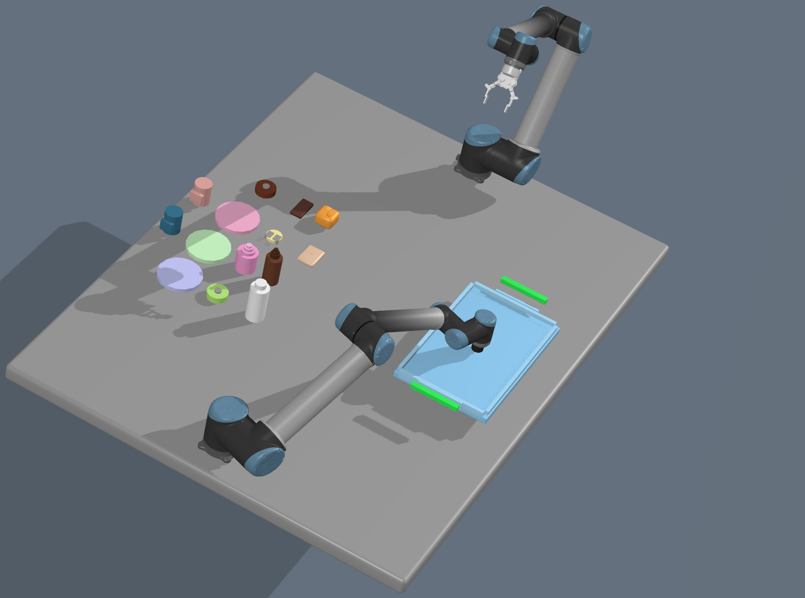
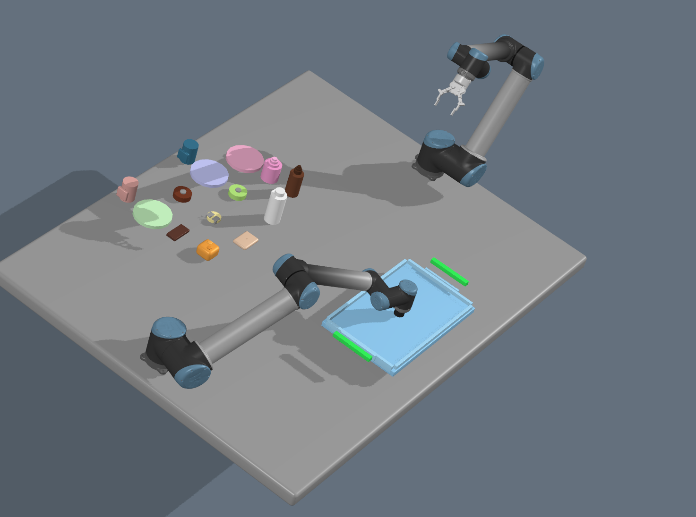
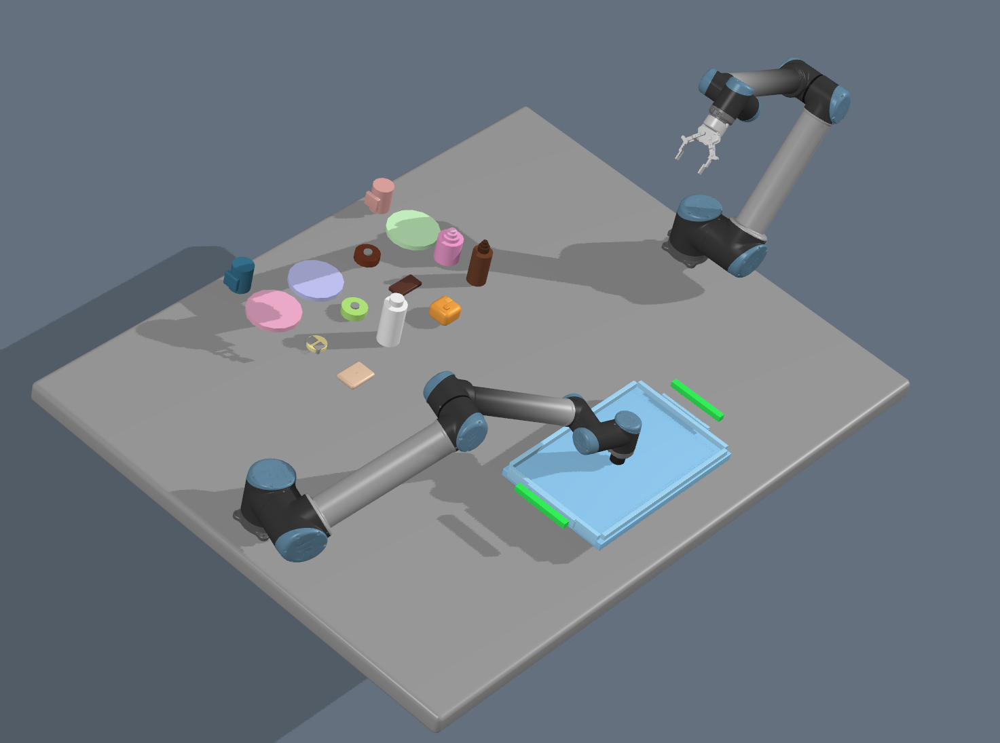
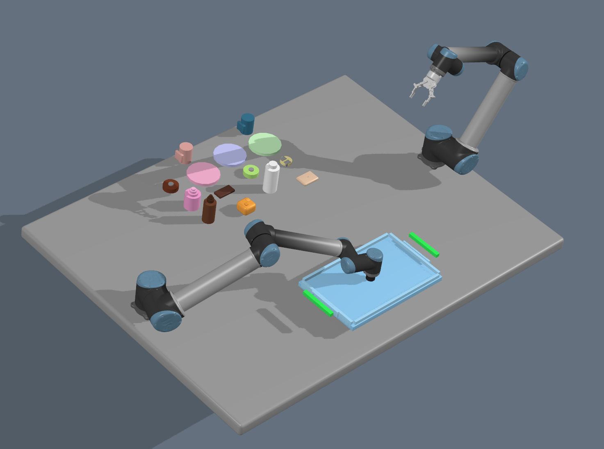
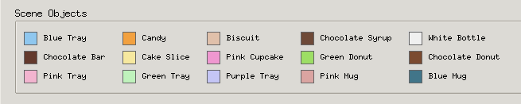

RAMP Implementation
RAMP Policy
RAMP is a hybrid robot policy that combines language-model symbolic planning with affordance-aware robot assignment and motion-feasibility ranking. The policy uses an LLM plan as a proposal, then checks robot capabilities, object affordances, placement geometry, and simulated execution before choosing an action.
Environment Setup
The experiments use a dual-UR10 tabletop setup with a tray target and multiple household objects. The four arrangements below represent different initial object layouts used to test whether RAMP can adapt robot assignment and grasp strategy from the current belief state.





Methodology
At the beginning of each episode, the environment is reset and the first observation is converted into a belief state. The belief tracks scene frames, object poses, robot capabilities, object affordances, held objects, tray placements, and recovery poses from interrupted executions.
Given the belief and the natural-language goal, RAMP queries an LLM
for a symbolic Python plan containing high-level actions such as
pick, place, lift, and
return_home. RAMP does not directly execute this plan.
It treats the LLM output as an initial proposal and rewrites it using
affordance and robot-capability metadata.
Affordance-Aware Refinement
-
Suction grasps are assigned top-down z picks with a
top_centerstrategy. - Finger grasps use side-pick directions with edge or handle grasp strategies.
- Interchangeable objects can be substituted within a semantic category, such as choosing the nearest plate-like object.
- Placement actions are rewritten from belief-state geometry instead of hardcoded coordinates.
- Tray slots are selected near the responsible robot, with yaw adjusted for handled objects such as mugs.
Candidate Ranking
RAMP evaluates several plan variants: the original LLM proposal, nearest-compatible-robot assignments, and robot-biased variants for each manipulator. Each candidate is executed in a sampled twin environment without visualization.
score = task_cost
+ w_d * end_effector_distance
+ w_c * capability_penalty
+ w_v * constraint_violationsClosed-Loop Execution
The selected plan is cached and returned one action at a time. The real environment executes each action using motion planning, including KOMO-based pick, lift, transport, and place motions. If an action succeeds, RAMP continues with the cached plan. If execution fails or creates constraint violations, the plan is invalidated and RAMP replans from the updated belief state.
Consecutive pick failures are tracked per object. After repeated failures, the object is marked unreachable and removed from future candidate plans to avoid retry loops.
Execution Protocol
- Instantiate the task, updater, environment, and policy from Hydra.
- Reset the environment and initialize the belief from observation.
- Sample a twin environment for policy-side simulation.
- Pass the current goal and belief to RAMP at every step.
- Execute the selected action in the real environment.
- Log execution statistics and feed success or constraint feedback to RAMP.
- Stop when the task is complete, no action remains, or the maximum number of environment steps is reached.
In the reported configuration, RAMP uses at most 15 environment steps, one feedback cycle, LLM querying enabled, and up to 50 candidate evaluations.